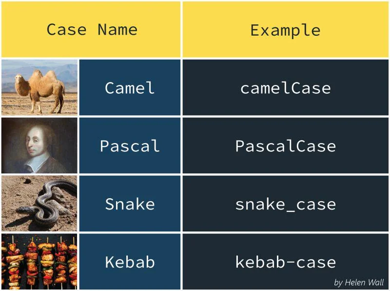

Data Cleaning
Audit, Decide, Record
Last Time
- A visual channel visually encodes variation in data.
- An aesthetic mapping links a variable to a visual channel.
- A geometry determines how obs are drawn on the plot.
- Mapping an aesthetic to a variable is different from setting it to a constant.
Key Ideas for Today
- Data cleaning is a set of decisions to ensure the data meets expections given its context and intended use.
- Clean reproducibly: raw data is read-only; changes lives in code.
- Audit a data set against a checklist before analyzing.
Garbage in, garbage out
Growth in a Time of Debt
2010: Reinhart and Rogoff report that countries with government debt above 90% of GDP had average growth of -0.1%.
. . .
Widely cited in arguments for austerity policy.
2013: A grad student, Thomas Herndon, tries to replicate it from their spreadsheet and finds:
- A formula range that left out 5 countries
- Years of available data excluded
- An unusual weighting of countries
. . .
Corrected average growth: +2.2%.
Only one of those three was a typo. The other two were decisions.
Data Cleaning
The process of finding and handling problems in a data set, such as bad names, wrong types, missing or invalid values, inconsistent categories, and duplicates, so that it faithfully represents what was measured and permits a valid analysis.
Every fix is a choice:
- Drop this row, or keep it?
- Is
"UCB"the same as"Berkeley"? - What is meant by
0?
Data Cleaning: three phases
1. Audit
Check the data against a fixed checklist, the same one every time.
2. Decide
For each problem, choose a fix and a reason. The reason depends on your question.
3. Record
Write the fix in code, with the reason, so anyone can rerun it.
The audit is systematic enough that anyone, or anything, could follow it, but the decisions are made by the analyst
3. Recording Reproducibly
- Never edit the raw file. No hand edits in Excel.
- Clean in code, in a script or
.qmd. - Document each decision in comments or prose.
- Check before and after each step: row counts, summaries.
my-project/
├── data/
│ ├── raw/
│ │ └── zev.xlsx # read-only
│ └── clean/
│ └── zev.csv # made by code
└── clean-data.qmd # every fix + why1. Audit
The Checklist
For each of the following, you must investigate, decide, then record.
- Source: data dictionary, unit of observation
- Names: syntactic and consistent?
- Types: does each type match its meaning?
- Missing values: explicit and disguised
- Distinct values: inconsistent categories?
- Ranges and outliers: impossible or just unusual?
- Duplicates and keys
- Structure: is it tidy?
Example: Auditing zev
Step 1: Know the source
From Project 2: new zero-emission vehicle registrations in California.
Question: What is the unit of observation?
# A tibble: 77,898 × 7
`Data Year` Quarter COUNTY FUEL_TYPE MAKE MODEL `Number of Vehicles`
<dbl> <dbl> <chr> <chr> <chr> <chr> <dbl>
1 2008 3 Alameda Electric Tesla Roads… 1
2 2008 3 San Francisco Electric Tesla Roads… 1
3 2008 3 San Mateo Electric Tesla Roads… 3
4 2008 3 Santa Clara Electric Tesla Roads… 4
5 2008 3 Sonoma Electric Tesla Roads… 1
6 2008 4 Alameda Electric Tesla Roads… 5
7 2008 4 Contra Costa Electric Tesla Roads… 1
8 2008 4 Los Angeles Electric Tesla Roads… 17
9 2008 4 Marin Electric Tesla Roads… 3
10 2008 4 Napa Electric Tesla Roads… 1
# ℹ 77,888 more rowsStep 1: Know the source
From Project 2: new zero-emission vehicle registrations in California.
Question: What is the unit of observation? What are the variables?
A year × quarter × county × fuel type × make × model. For each we record the number of registrations (subject to some criteria).
Step 2: Names
- Some column names are not valid R names, e.g. containing space or symbol or starts with a number. Fix: wrap in backticks.
Error in parse(text = input): <text>:2:15: unexpected symbol
1: zev |>
2: filter(Data Year
^# A tibble: 5,514 × 7
`Data Year` Quarter COUNTY FUEL_TYPE MAKE MODEL `Number of Vehicles`
<dbl> <dbl> <chr> <chr> <chr> <chr> <dbl>
1 2026 1 Alameda Electric Audi Q4 e-tron 1
2 2026 1 Alameda Electric Audi Q6 Sport… 1
3 2026 1 Alameda Electric Audi Q6 e-tron 1
4 2026 1 Alameda Electric Audi RS e-tro… 1
5 2026 1 Alameda Electric Audi S6 Sport… 3
6 2026 1 Alameda Electric BMW i4 28
7 2026 1 Alameda Electric BMW i5 10
8 2026 1 Alameda Electric BMW i7 4
9 2026 1 Alameda Electric BMW iX 42
10 2026 1 Alameda Electric Cadillac Escalade… 4
# ℹ 5,504 more rowsStep 2: Names
Some column names are not valid R names, e.g. containing space or symbol or starts with a number. Fix: wrap in backticks.
Some column names use inconsistent casing:
COUNTY,FUEL_TYPE, butQuarter.
Step 2: Names
rename()
Changes column names with the form new_name = old_name, leaving all other columns as they are.
[1] "year" "quarter" "county" "fuel_type" "make"
[6] "model" "n_vehicles"Convention: all lowercase, words separated by
_(“snake case”).

Step 3: Types
Does each column’s type match its meaning?
year quarter county fuel_type make model
"numeric" "numeric" "character" "character" "character" "character"
n_vehicles
"numeric" quarteris a double, but only ever 1, 2, 3, or 4.yearandquarterare one idea (time) split over two columns. Dates are coming in Lecture 22.
Common type problems:
- numbers stored as text:
"1,200","$5" - dates stored as text
- IDs stored as numbers (zip codes lose leading zeros:
02134→2134)
When types go wrong
Excel automatically converts some text into dates.
| Gene | In Excel |
|---|---|
SEPT2 |
2-Sep |
MARCH1 |
1-Mar |
- 2016: about 1 in 5 genomics papers with Excel gene lists had names mangled into dates.
- 2020: geneticists renamed the genes (
SEPTIN2,MARCHF1).
Another argument for keeping raw data read-only and doing all changes in code.
Step 4: Missing values
The quick check across every column at once:
year quarter county fuel_type make model n_vehicles
0 0 0 0 0 0 0 No
NAs! So nothing is missing… right?
Missing without NA
[1] 1# A tibble: 12 × 2
year n
<dbl> <int>
1 2013 4
2 2014 1
3 2016 1
4 2017 1
5 2019 3
6 2020 2
7 2021 8
8 2022 6
9 2023 5
10 2024 7
11 2025 5
12 2026 1Only 12 of the 19 years show up for Alpine County (none before 2013, none in 2015 or 2018). Zero cars? Or no data?
Missing without NA
Implicit Missing Value
A value that is missing because its whole row is absent from the data, rather than recorded as NA.
Disguised Missing Value
A missing value recorded as a regular-looking value, such as -99, 999, "", "N/A", or "unknown". Also called a sentinel value.
Check the data dictionary: it often lists the codes used for “missing.”
Disguised missing values
[1] -3.4Disguised missing values
[1] -3.4na_if()
Replaces every element of a vector that equals a given value with NA.
Why is it missing?
Before you drop, keep, or fill in missing values, ask whether missingness is related to anything.
Unrelated: a survey page failed to load for a random 5% of people.
→ Dropping those rows loses precision but not much else.
Related: people with the highest incomes are the most likely to skip the income question.
→ Dropping them makes everyone look poorer.
Your options: drop the rows, keep the NAs, or fill in (impute) a value. Whichever you choose, write down why.
Step 5: Distinct values
Decision: "Out Of State"
Vehicles are assigned to a county by the owner’s mailing address.
# A tibble: 1 × 2
rows vehicles
<int> <dbl>
1 1752 32838Vote: What should we do with these rows?
A. Drop them
B. Keep them as they are
C. Keep them, but add a column that flags them
Decision: "Out Of State"
It depends on the question. For a statewide total they count; for a map of counties they don’t. Flagging keeps both options open.
Distinct values: make
Casing is inconsistent across makes (
"BMW","MINI","Tesla"), but each make is spelled one way, so nothing needs merging.
Distinct values: make
# A tibble: 1 × 2
model n
<chr> <int>
1 bZ4X/Solterra 444Discuss: Toyota, Subaru, or its own make?
Recoding messy labels
zev is tidy on this front. Most data isn’t.
campus
berkeley Berkeley Berkeley Laney UCB
1 1 1 1 1 Recoding messy labels
zev is tidy on this front. Most data isn’t.
campus
berkeley laney ucb
3 1 1
trimws()removes leading/trailing whitespace;tolower()lowercases.
Recoding messy labels
case_when()
A vectorized, multi-branch if-else: returns the value paired with the first condition that is TRUE, and .default otherwise.
[1] "berkeley" "berkeley" "berkeley" "berkeley" "laney" For just two branches,
if_else()is dplyr’s stricter version ofifelse(). More powerful string tools (stringr) are coming in Lecture 19.
Step 6: Ranges and outliers
Min. 1st Qu. Median Mean 3rd Qu. Max.
1.00 1.00 4.00 34.69 16.00 10015.00 Step 6: Ranges and outliers
Min. 1st Qu. Median Mean 3rd Qu. Max.
1.00 1.00 4.00 34.69 16.00 10015.00 Who is the 10,015?
# A tibble: 3 × 8
year quarter county fuel_type make model n_vehicles in_state
<dbl> <dbl> <chr> <chr> <chr> <chr> <dbl> <lgl>
1 2024 2 Los Angeles Electric Tesla Model Y 10015 TRUE
2 2023 2 Los Angeles Electric Tesla Model Y 9787 TRUE
3 2025 3 Los Angeles Electric Tesla Model Y 8565 TRUE Tesla Model Y’s in Los Angeles County: extreme, but entirely believable.
Outlier
A value far from the bulk of the data. It may be correct.
Data Error
A value that cannot be true given what the variable measures.
Tell them apart with validity constraints: rules the data must follow.
- ages ≥ 0 and below about 120; percentages in [0, 100]
- quarters in 1–4; dates not in the future
- across columns: end date after start date, subtotal ≤ total
Fix or remove errors. Keep outliers, and think about how they affect your summaries.
stopifnot()
Throws an error unless every condition given to it is TRUE.
When the data are updated next quarter, a broken expectation fails loudly.
Step 7: Duplicates and keys
Check the keys: a column, or combination of columns, whose values uniquely identify each row.
# A tibble: 0 × 7
# ℹ 7 variables: year <dbl>, quarter <dbl>, county <chr>, fuel_type <chr>,
# make <chr>, model <chr>, n <int>No duplicates: these six columns are a key for
zev. For exact duplicate rows, comparenrow(df)tonrow(distinct(df)).
Step 8: Structure
Tidy Data
A data frame where each variable is a column, each observation is a row, and each value is a cell.
Tidy (like zev):
| county | quarter | n |
|---|---|---|
| Alameda | 1 | 910 |
| Alameda | 2 | 1004 |
Not tidy: quarter is spread across column names.
| county | Q1 | Q2 |
|---|---|---|
| Alameda | 910 | 1004 |
Reshaping between these (pivoting) comes in Lecture 18.
Decide, Record, Re-check
zev_raw <- read_excel("data/raw/New_ZEV_Sales_Last_updated_07-17-2026_ada.xlsx",
sheet = "County")
zev <- zev_raw |>
# Snake-case names so no backticks are needed
rename(year = `Data Year`, quarter = Quarter, county = COUNTY,
fuel_type = FUEL_TYPE, make = MAKE, model = MODEL,
n_vehicles = `Number of Vehicles`) |>
# Keep out-of-state registrations but flag them: needed for statewide
# totals, excluded from county-level comparisons
mutate(in_state = county != "Out Of State")
# Note: zero counts are implicit (no row), not NA
# Nothing dropped; expectations still hold
stopifnot(
nrow(zev) == nrow(zev_raw),
all(zev$quarter %in% 1:4),
all(zev$n_vehicles >= 1)
)
readr::write_csv(zev, "data/clean/zev.csv")Cleaning is iterative: EDA will turn up new problems, and you’ll return to cleaning.
Guess the Metaphor
Data cleaning is like a tax audit: you go through a checklist to see if the data (the tax return) conforms to standards and expectations. Where it doesn’t, you decide what to change to make it conform and record those changes.
Key Ideas for Today
- Data cleaning is a series of analytic decisions, not busywork.
- Clean reproducibly: raw data is read-only and every change lives in code.
- Audit a new data set against a checklist before analyzing it.
- A disguised missing value like
-99or"N/A"hides in plain sight. - An outlier is not necessarily an error: check validity before you “fix” it.
For Next Time
- PS 3 due 10/03 at 11:59 pm.
- Keep working on Project 2. Apply the checklist to
zevbefore you answer Part 4. - Friday: Exploratory Data Analysis.